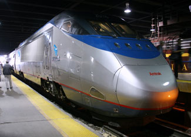

President Barack Obama released a strategic plan last week that outlines his vision for developing high-speed rail in the United States.
The plan draws on $13 billion in federal investment as a down payment on a world-class passenger rail system consisting of 10 high-speed rail corridors. The initial federal investment would consist of $8 billion in funds from the American Recovery and Reinvestment Act (ARRA), plus $1 billion per year for the next five years as requested in the federal budget.
The high-speed rail corridors run along the East Coast and most of the West Coast, and form networks in the Northeast, Midwest and South, with each corridor extending 100 to 600 miles.
Today’s intercity passenger rail services consume one-third less energy per passenger-mile than cars. Building high-speed rail lines on all the federally designated corridors could cut U.S. carbon dioxide emissions by 6 billion pounds per year.
To develop the plan, the Federal Railroad Administration (FRA) will initially offer ARRA grants to projects that are ready to roll, with environmental reviews and preliminary engineering work already completed. Those initial projects will be followed with more comprehensive programs and cooperative agreements to develop entire phases or geographic sections of the high-speed rail corridors.
Over the next five years or more, non-ARRA federal appropriations will go toward cooperative agreements for planning the activities and projects needed to fully develop the high-speed rail network. Developing a comprehensive high-speed rail network will require a long-term commitment at both the federal and state levels. See the strategic plan on the FRA’s high-speed rail Web page.
|
 CLIFF1066/FLICKR A high-speed rail train on the Acela Express train service, which operates between Washington, D.C., and Boston via Baltimore, Philadelphia and New York. Intercity passenger rail services consume one-third less energy per passenger-mile than cars. |
|
|